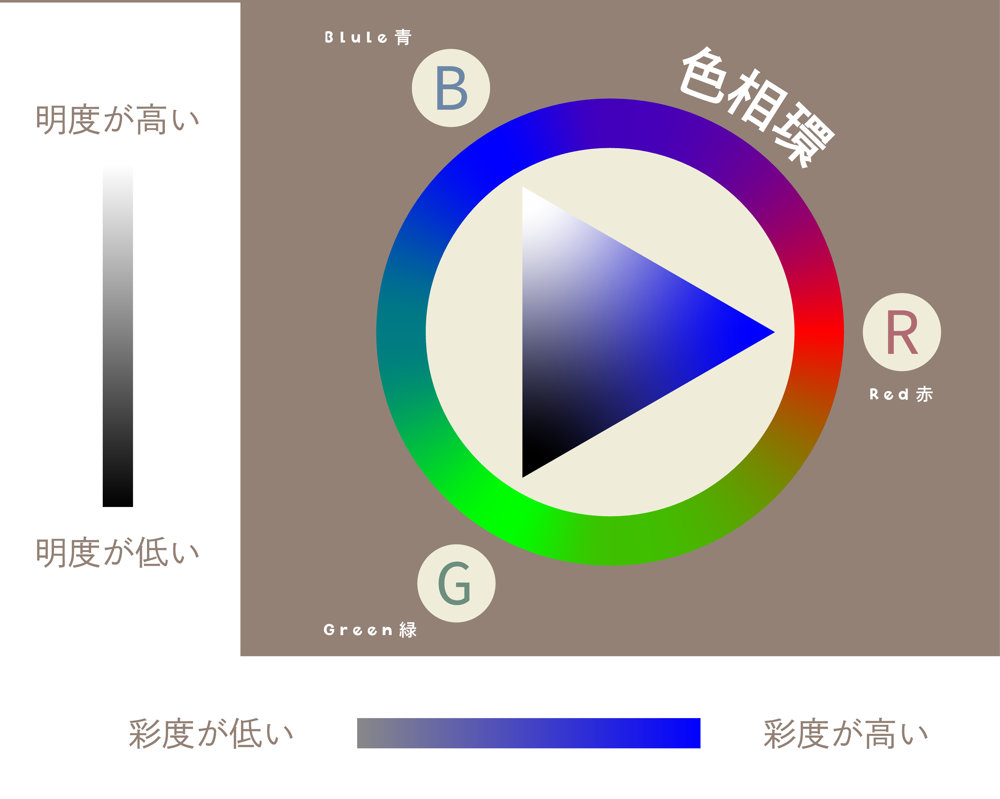

キャンバスの役割：画面全体を背景となる「地」と捉え、そこに配置された主役や要素を「図」と呼びます。
主役の探し方：「地」の中で最も際立っている「大きな図」を探すのが鑑賞の第一歩です。大きさやコントラストの差に注目することで、作者が意図した主役が浮かび上がります。
明度（明るさ）：白と黒の差です。黒い背景に白い被写体があるように、明度差が大きいほど視覚的なインパクト（コントラスト）は強くなります。中間色のグレーは調和を生みますが、インパクトは弱まります。
色相（色の種類）：赤・緑・青などの色の違いです。色相環で反対側に位置する「補色」同士を組み合わせると、お互いの色が引き立ち、強烈なコントラストが生まれます。
彩度（鮮やかさ）：色の濁りのなさです。グレーの混じらない鮮やかな色は彩度が高く、無彩色（グレー）との組み合わせによって、特定の「図」を鮮明に強調することができます。
視線の流れ：「大きさ・明度・色相・彩度」のコントラストが高い順に、人間の目は自然と誘導されます。これを「視線誘導」と呼びます。
デザインの定石：最も伝えたいメイン情報を「最強のコントラスト」を持つ場所に配置し、その後に補足情報を順次配置することで、読み手に迷いを与えず情報を伝えることが可能になります。
私たちの脳は、生存戦略として「周囲と違うもの（異変）」を瞬時に見つける性質があります。デザインにおけるコントラストの操作は、この本能的な反応を応用した「視覚の演出術」とも言えるのです。